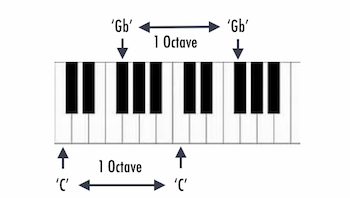

Notes as Cosets: A Guide to the Octave Quotient Group
As a violinist who had been classically trained for 15 years, I have heard and played the same "A" note thousands of times. However, an "A" note at 440 Hz and an "A" note at 880 Hz are mathematically different numbers. So why do we hear them as the same?
In music, frequencies are measured in Hertz, and since frequencies cannot be zero or negative, our set is the set of positive real numbers: $$\mathbb{R}^+ = { x \in \mathbb{R} \mid x > 0 }$$
Additionally, we can define the octave frequencies as the multiplicative group $(\mathbb{R}^+, \cdot)$. We can show $(\mathbb{R}^+, \cdot)$ works as a group by checking the group axioms:
- Closure: Multiplying two frequencies always results in a positive frequency.
- Identity: The identity would be 1 Hz.
- Associativity: The multiplication of real numbers is inherently associative.
- Inverse: There is a frequency $f^{-1}$ for every frequency $f$.
Note: The parent group $(\mathbb{R}^+, \cdot)$ is also abelian, meaning for any two frequencies $a, b$, we have $ab = ba$.
The Subgroup of Octaves
Although the parent group accounts for every possible frequency, musicians do not look at every individual frequency, but rather a symmetry in sound, which is the octave. We can define this mathematically by defining a subgroup $H$ consisting of all integer powers of two: $$H = { 2^n \mid n \in \mathbb{Z} } = { \dots, \frac{1}{4}, \frac{1}{2}, 1, 2, 4, \dots }$$
Since our parent group is abelian, $H$ is automatically a normal subgroup, which means that if a specific interval was applied to a note, the result is consistent across all octaves. In a non-abelian or non-normal system, transposing a note into a different register would fundamentally change the note itself.
The Quotient Group
By quotienting the parent group $\mathbb{R}^+$ by the subgroup $H$, we are taking the infinite number of frequencies and turning it into a repeating set. In this quotient group, the elements are not just numbers, but cosets that represent a specific pitch class. A pitch class represents notes that are the same, but have different frequencies. For instance, we can analyze the coset for the note "A". Instead of just being the number 440, the "A" in our quotient group is the entire set: $$[440] = { \dots, 220, 440, 880, 1760, \dots }$$
Since $H$ is our identity in the quotient group, any two frequencies $f_1, f_2$ are equivalent if $f_1 \cdot f_2^{-1} \in H$.
Consistent Intervals
$H$ must be a normal subgroup because that is what makes musical intervals consistent. Consistency in this context is defined as the group operation behaving the same way across every coset. In music, an interval is just multiplying a frequency by a specific ratio, such as multiplying by $1.5$ to obtain a perfect fifth.
Since our parent group is abelian, we are able to combine elements in the quotient group and still stay consistent. For instance: If you start at $440$ Hz ("A") and move up a fifth, you land on $660$ Hz ("E"). If you start at $880$ Hz (also "A") and move up a fifth, you land on $1320$ Hz ("E").
Even though $440$ Hz and $880$ Hz are in the same coset, the math remains consistent when we move between different notes.

Although music is widely considered to be an emotional and creative art form, its foundation is actually built upon symmetric group theory. By defining the relationship between frequencies as a quotient group $\mathbb{R}^+/H$, we can explain how the infinite spectrum of sound is categorized into distinct, repeating pitch classes.